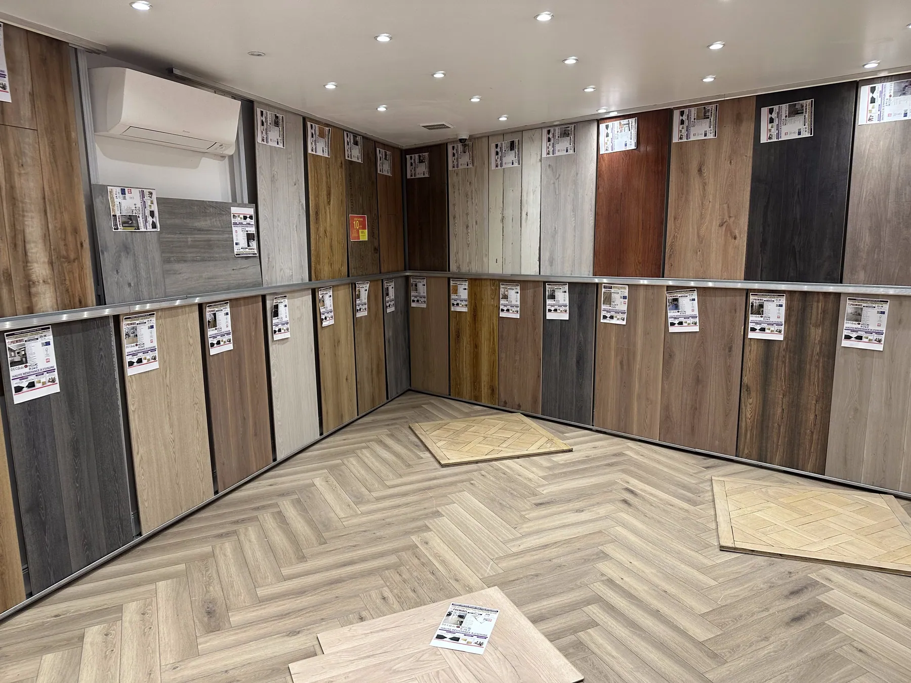
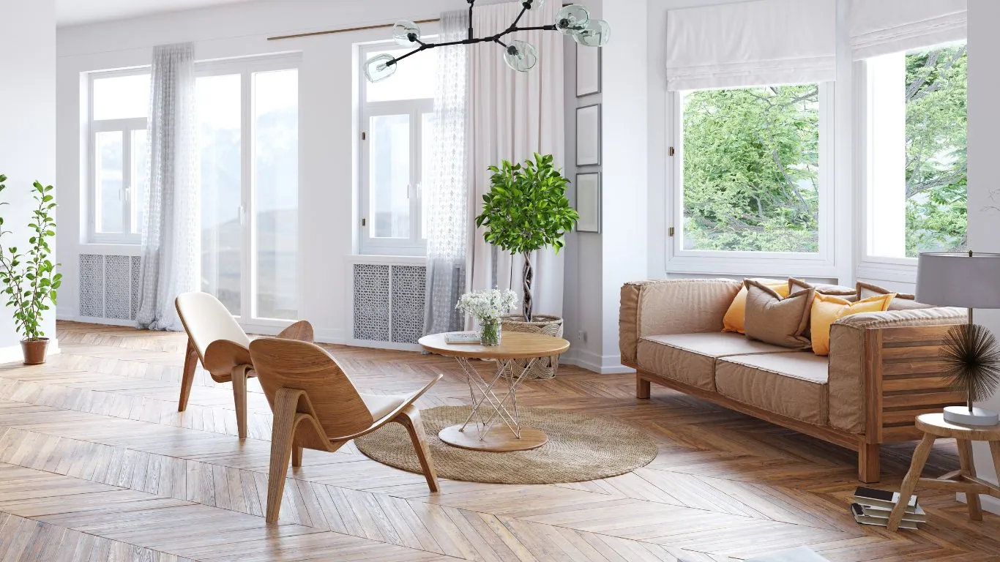
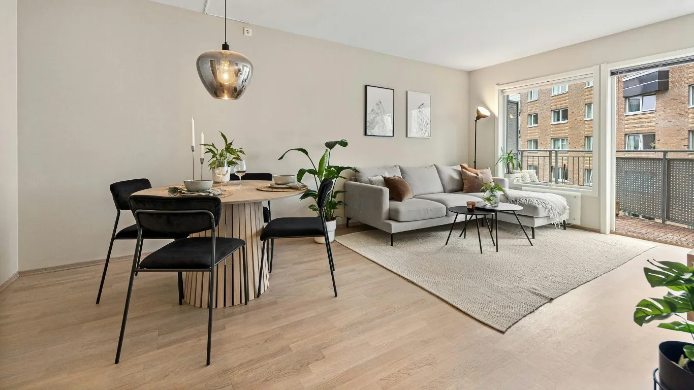

Une passion du parquet depuis plus de trois décennies.
Premibel Parquet est une société familiale fondée en 1992. Créateur de tendances parquet depuis 33 ans, nous guidons chaque client vers le sol qui lui correspond vraiment.
Premibel Parquet, Paris 11eCréateur de tendances parquet depuis 33 ans
Ce qui nous rend unique
Plus de 33 ansà votre service.
Fondée en
1992
Une société familiale, née à Paris.
Expertise reconnue
33 ans
Plus de trois décennies de savoir-faire dans le parquet.
Large sélection
+500
Références en stock, disponibles.
Chronologie
De Dinabazar® à Premibel, une histoire de sols.
Faites défiler →
1992
Les débuts
Création de la société DINABAZAR®. L’enseigne est spécialisée dans la vente d’outils de bricolage, de peintures et de revêtements de sol.
2000
Dinabazar® devient Premibel Parquet®
L’activité se concentre sur la vente de parquets. La marque commercialise des parquets massifs, contrecollés et des sols stratifiés, ainsi que tous les produits annexes nécessaires à leur mise en œuvre.
2005
L’expertise du parquet
Montée en gamme et spécialisation dans les revêtements haute qualité. Premibel Parquet® dispose de plus de 1 000 références et 100 000 m² de parquet en stock permanent.
Filières
Ses propres filières d’approvisionnement
Importateur direct à la logistique performante, Premibel propose des parquets au rapport qualité/prix excellent, et organise régulièrement des opérations de déstockage. La marque devient revendeur exclusif des produits d’isolation acoustique DINACHOC®.
2008
Premier franchisé
Premibel accueille son premier franchisé au Cannet, dans les Alpes-Maritimes.
2009
Label Premibel Éco-responsable
Création du label PREMIBEL ÉCO-RESPONSABLE et début de la participation au réseau Forêts et Commerce du WWF.
2012
3 franchisés, 5 showrooms à Paris
À l’écoute du public et des tendances, Premibel propose continuellement des produits originaux et de qualité, pour les particuliers comme pour les professionnels.
Sept.2012
Premibel Prestige®
Création de la marque PREMIBEL PRESTIGE®, des parquets de luxe issus d’essences d’exception, et ouverture d’un showroom au 53 quai des Grands-Augustins, à Paris 6e.
2013
Des magasins en propre
Projet d’ouverture de plusieurs magasins en propre en région parisienne, tout en poursuivant l’extension du réseau de franchises.
2016
Certification FSC® et PEFC
Premibel compte 2 showrooms en franchise et 13 showrooms en propre, et confirme sa démarche écologique avec la certification FSC® et PEFC de sa chaîne de contrôle.
Seuls les produits identifiés comme tels sont certifiés FSC® BV-COC-130407 ou PEFC BVFR-PEFC-COC-6266690.
Aujourd’hui
La même passion qu’à nos débuts
Proposer des parquets de qualité, inspirer les intérieurs et guider chaque client vers le sol qui lui correspond vraiment.
Notre approche



01 / 04
01 — Accompagnement
Une expertise au service de tous les projets
Choisir un parquet ne se résume pas à choisir une couleur ou une essence. Il faut tenir compte du style de vie, de la pièce, du type de pose, de la résistance souhaitée, de l’entretien et du rendu final.
C’est pourquoi Premibel accompagne chaque client avec une approche personnalisée. Nos équipes conseillent, orientent et aident à trouver le sol le plus adapté à chaque projet : rénovation, construction, appartement, maison, boutique, bureau, hôtel ou chantier professionnel.
Conseils personnalisés
Large choix de références
Showrooms dédiés
Solutions pour les pros
02 — Sélection
Une sélection des références exigeante
Chêne intemporel, essences exotiques, bambou, parquet massif, contrecollé, stratifié, point de Hongrie, bâton rompu ou lames droites : chaque référence est choisie pour répondre à des envies, des usages et des budgets différents.
Notre force repose sur une connaissance approfondie du marché, une sélection rigoureuse des matières et une capacité à proposer des solutions adaptées aux particuliers comme aux professionnels.
03 — Tendances
Une marque à l’écoute des tendances
Toujours attentive aux évolutions de l’habitat et de la décoration intérieure, Premibel enrichit régulièrement ses collections avec de nouvelles finitions, de nouveaux formats et des motifs inspirants.
Notre ambition est simple : rendre le parquet accessible à tous les styles, du plus classique au plus contemporain, tout en conservant un haut niveau d’exigence sur la qualité et la durabilité.
04 — Durabilité
Un engagement durable
Premibel accorde une attention particulière à la provenance des bois et à la qualité des matériaux sélectionnés. Notre démarche s’inscrit dans une volonté de proposer des sols durables, fiables et responsables.
Cette exigence se traduit notamment par la sélection de partenaires engagés, le développement de gammes responsables et l’attention portée aux certifications environnementales comme FSC et PEFC lorsque les produits concernés le permettent.
Plus de trois décennies de savoir-faire dans le parquet.
02
Large sélection
+500 références en stock disponibles.
03
Conseils d’experts
Une équipe à votre écoute pour vous guider.
04
Showrooms inspirants
Venez directement voir, toucher et comparer.
05
Qualité & exigence
Des produits minutieusement sélectionnés.
06
Particuliers & professionnels
Des solutions adaptées à tous vos projets.
Premibel aujourd’hui
Une équipe, la même passion.
Nous continuons de vous accompagner dans vos projets d’aménagement avec la même passion qu’à nos débuts : proposer des parquets de qualité, inspirer les intérieurs et guider chaque client vers le sol qui lui correspond vraiment.
« Formidable le vendeur Daniel et la vendeuse Esther sont professionnels et de bon conseil. Je recommande. »